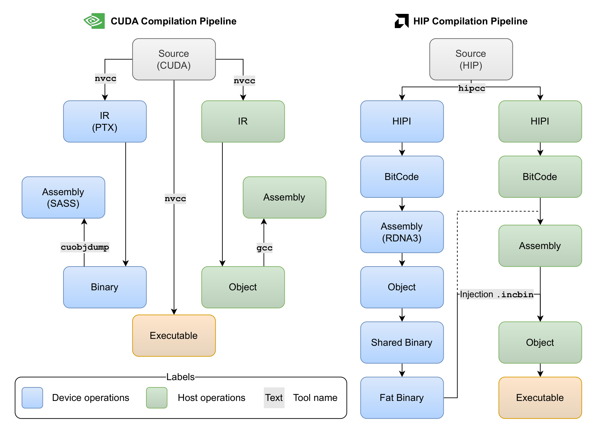
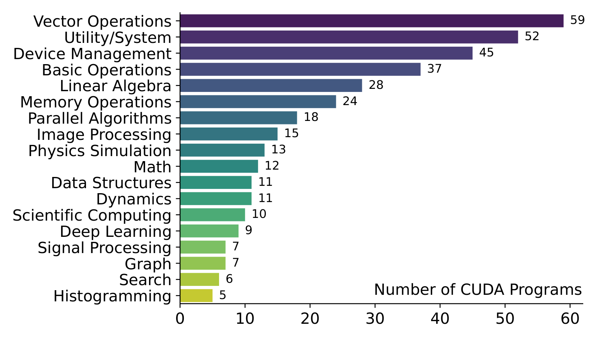
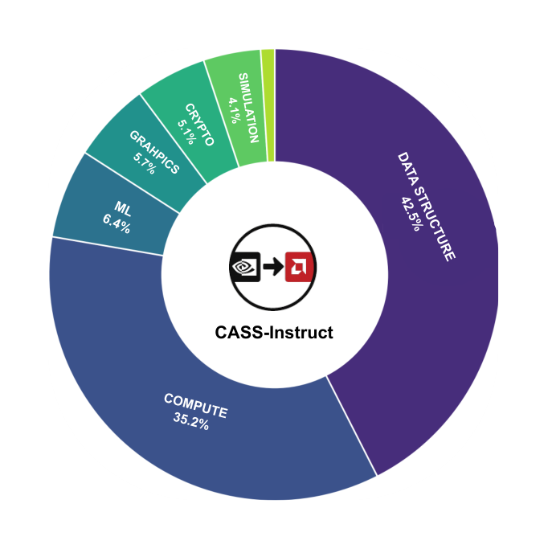
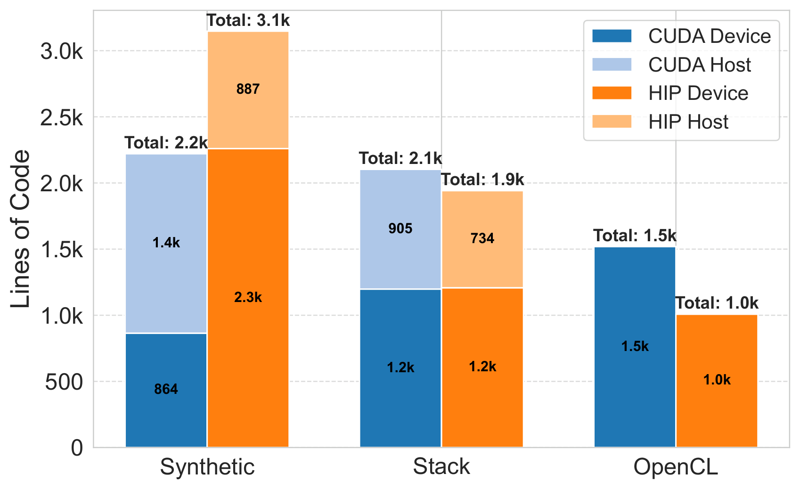
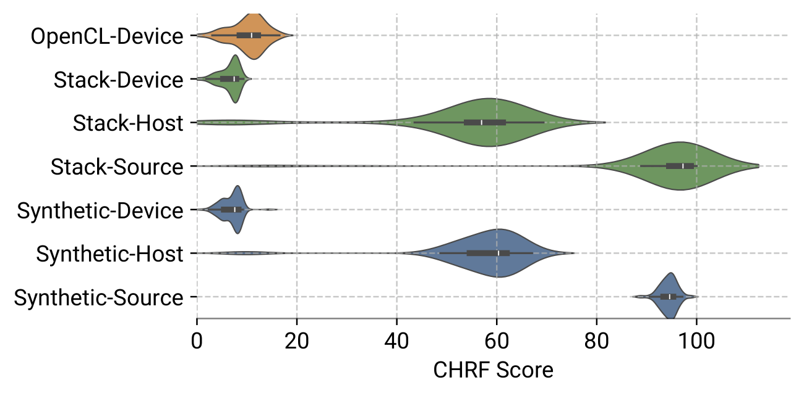
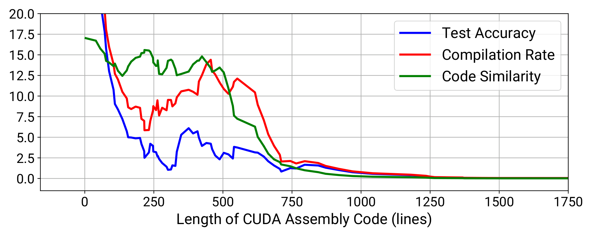
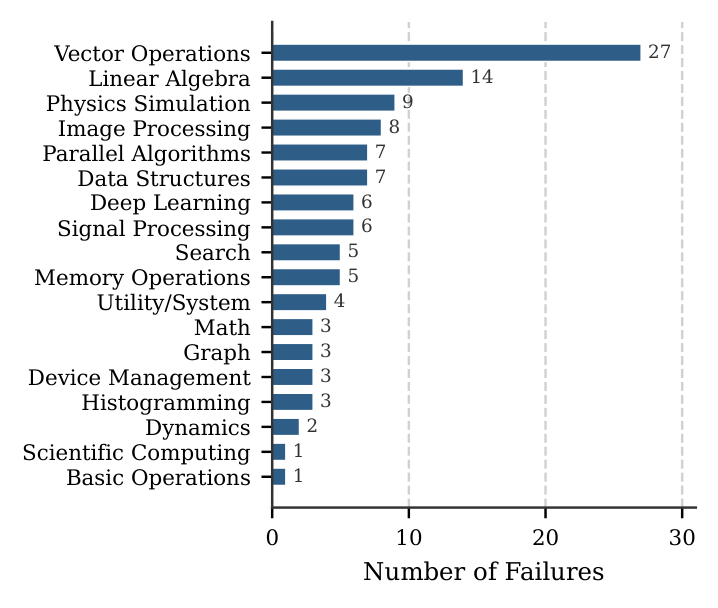

CASS: Nvidia to AMD Transpilation with Data, Models, and Benchmark
Accepted at ACL 2026 Main Conference
We introduce CASS, the first large-scale dataset and model suite for cross-architecture GPU code transpilation, targeting both source-level (CUDA ↔ HIP) and assembly-level (Nvidia SASS ↔ AMD RDNA3) translation. The dataset comprises 60,694 verified code pairs across host and device (from ~66k collected samples), addressing a critical gap in low-level GPU code portability. Leveraging this resource, we train the CASS family of domain-specific language models, with our flagship CASS-7B achieving 88.17% source translation accuracy and 69.11% assembly translation accuracy, substantially outperforming commercial baselines such as GPT-5.1, Gemini 2.5 Pro, Claude, and Hipify. Our generated code matches native performance in over 85% of test cases, preserving runtime and memory behavior. To support rigorous evaluation, we introduce CASS-Bench, a curated benchmark of 369 tasks spanning 18 GPU domains with ground-truth execution. All data, models, and evaluation tools are released as open source to foster progress in GPU compiler tooling, binary compatibility, and LLM-guided hardware translation.
A key motivation for CASS is the deep divergence between the
Nvidia and AMD compilation pipelines. Nvidia's stack is largely opaque: accessing device
assembly (SASS) requires first compiling to binary, then using cuobjdump. AMD's
process is transparent — device assembly (RDNA3) can be inspected and modified before host
integration. This asymmetry forces any cross-architecture translator to reason about
fundamentally different toolchains.

Figure 2. CUDA vs. HIP compilation stacks. Nvidia's pipeline (left) is closed:
device code is embedded in a fat binary and SASS must be recovered post-hoc with
cuobjdump. AMD's pipeline (right) is transparent: RDNA3 assembly is emitted
as a plain .s file and can be inspected or modified before host linking.
CASS is the first dataset to enable source- and assembly-level translation research for GPU architectures, comprising 60,694 semantically aligned CUDA–HIP source pairs and their corresponding host and device assemblies, drawn from three complementary sources: Stack (real-world GitHub code, 34.1k final samples), Synthetic (prompt-generated via LLMs, 20.0k) and OpenCL (kernels translated to CUDA, 6.6k).
CASS-Bench is a 369-sample evaluation suite spanning 18 GPU-centric domains — parallel algorithms, image processing, scientific computing, linear algebra, deep learning, signal processing, and more. Each sample is compiled and executed end-to-end, with ground-truth HIP outputs for strict functional verification.



Figure 3. Coverage of CASS and CASS-Bench. (a) CASS-Bench category mix across the 369 evaluation tasks. (b) Training-sample distribution over the 18 GPU-centric domains covered by the dataset (parallel algorithms, image processing, linear algebra, scientific computing, deep learning, signal processing, …). (c) Verbosity — distribution of lines of code across CUDA, HIP, Nvidia SASS, and AMD RDNA3 — showing that assembly sequences are an order of magnitude longer than their source counterparts.
On the full 369-task CASS-Bench, our flagship CASS-sm80-7B dominates both source-to-source and the much harder assembly-to-assembly task, beating frontier closed-source models (GPT-5.1, Claude-Haiku-4.5, Gemini-2.5-Pro), the rule-based transpiler Hipify, and much larger open coder models. Metrics below: Test Acc. is strict end-to-end accuracy (compile + exact output match); Compile Rate is the share of samples that compiled successfully.
| Model | Assembly | Source | ||
|---|---|---|---|---|
| Test Acc. ↑ | Compile Rate ↑ | Test Acc. ↑ | Compile Rate ↑ | |
| ZLUDA | 7.86 | 8.40 | 19.24 | 27.59 |
| Hipify | – | – | 87.46 | 92.95 |
| GPT-5-mini | 14.63 | 15.72 | 66.67 | 93.91 |
| Claude-Haiku-4.5 | 11.24 | 13.87 | 69.42 | 95.27 |
| Gemini-2.5-Flash | 8.94 | 10.30 | 65.95 | 94.98 |
| GPT-5.1 | 22.22 | 25.20 | 84.95 | 98.92 |
| Gemini-2.5-Pro | 6.50 | 8.94 | 54.25 | 93.19 |
| Qwen2.5-Coder-32B | 5.42 | 6.50 | 6.22 | 17.77 |
| DeepSeek-Coder-V2-Lite | 2.99 | 4.00 | 24.17 | 35.82 |
| CASS-sm85-1.5B | 54.74 | 67.21 | 85.91 | 96.75 |
| CASS-sm85-3B | 59.89 | 81.84 | 86.99 | 98.37 |
| CASS-sm85-7B | 68.83 | 75.88 | 87.81 | 98.56 |
| CASS-sm80-7B | 69.11 | 90.24 | 88.17 | 98.92 |
Source-level CUDA↔HIP code is highly similar (CHRF > 90% on the Stack subset), which is why string-rewriting tools like Hipify succeed on easy inputs. Assembly-level SASS↔RDNA3 similarity is near zero — the task is genuinely cross-architecture, not surface-level text substitution.

Figure 6. CHRF similarity between CUDA and HIP. At the source level the distributions peak near 1.0 — CUDA and HIP strings are almost identical modulo a vocabulary rename. At the assembly level, SASS ↔ RDNA3 similarity collapses toward zero, showing that device-asm translation is a genuine cross-ISA mapping rather than a find-and-replace.
All three metrics — test accuracy, compile rate, and code similarity — degrade as the CUDA assembly input grows longer. Beyond ~1,250 lines, performance collapses to near zero, motivating our 16K-token training window together with RoPE extrapolation to ~32.7K tokens at inference time.

Figure 7. Effect of input length on assembly translation. Test accuracy, compile rate, and code similarity all decline monotonically as the CUDA SASS input grows, and drop to near zero past ~1,250 lines. This motivates training with a 16K-token window and using RoPE extrapolation to push inference up to ~32.7K tokens.
Assembly-level failures concentrate in compute-heavy categories — Vector Operations (27), Linear Algebra (14), and Physics Simulation (9) — where long kernels and high register pressure push the model past its effective context. Structurally simpler domains (Basic Operations, Scientific Computing) fail only in isolated cases.

Figure 8. Assembly-level failures by category. Errors concentrate in compute-heavy domains — Vector Operations (27), Linear Algebra (14) and Physics Simulation (9) — where long kernels and high register pressure stretch the model past its effective context. Structurally simpler domains (Basic Operations, Scientific Computing) fail only in isolated cases.
Each stage of the CASS data recipe adds measurable lift — synthetic data delivers the largest jump on assembly translation, and RoPE extrapolation closes the gap on long inputs that would otherwise truncate.
| Experiment | Source Acc. | Assembly Acc. | Δ Impact |
|---|---|---|---|
| Stack subset | 79.67% | 48.24% | – |
| + Synthetic | 84.28% | 59.88% | +11.65% |
| + OpenCL | 87.18% | 65.23% | +5.35% |
| + RoPE Extrapolation | 88.17% | 69.11% | +3.88% |
@misc{heakl2025cassnvidiaamdtranspilation,
title={CASS: Nvidia to AMD Transpilation with Data, Models, and Benchmark},
author={Ahmed Heakl and Sarim Hashmi and Gustavo Bertolo Stahl and Seung Hun Eddie Han and Salman Khan and Abdulrahman Mahmoud},
year={2025},
eprint={2505.16968},
archivePrefix={arXiv},
primaryClass={cs.AR},
url={https://arxiv.org/abs/2505.16968},
}